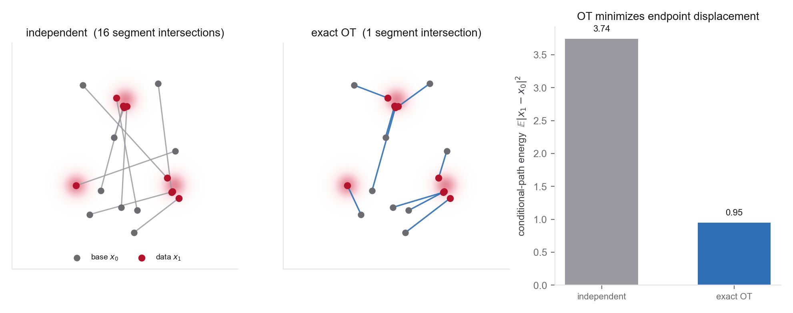

5.1Orientation
A coupling \(\pi(x_0,x_1)\) is any joint law of a base sample and a data sample with the prescribed marginals. In the population construction it fixes the same endpoints but changes the intermediate marginal path, the conditional velocities, and the regression problem the model must approximate.

Week 3 built flow matching on a chosen path and Week 4 thickened that path into a stochastic interpolant, but both took the coupling for granted. When you draw \(x_0\sim\rho_0\) and \(x_1\sim q\) independently and join them, the per-sample paths are straight, yet the field the network actually learns, the marginal velocity \(b_t(x)=\mathbb E[\dot x_t\mid x_t=x]\), is a conditional average over every pair passing through \(x\). When several endpoint pairs imply different velocities near the same \((t,x)\), the conditional mean can be harder to approximate than any individual straight path. A better coupling can reduce this velocity ambiguity. Whether that yields fewer ODE steps is an empirical property of the learned field, not a consequence of endpoint cost alone.
Optimal transport gives a precise endpoint criterion. Among all couplings with the given marginals, the (squared-Euclidean) OT plan minimizes the expected transport cost \(\mathbb E_\pi\|x_1-x_0\|^2\). For \(X_t=(1-t)X_0+tX_1\), this equals the expected conditional-path energy. The marginal kinetic action is instead \(\int_0^1\mathbb E\|b_t(X_t)\|^2\,dt\), which is no larger; the gap is the integrated conditional velocity variance. Under Brenier's hypotheses (quadratic cost on \(\mathbb R^d\), an absolutely continuous source measure, and finite second moments), the optimal coupling is induced almost everywhere by the gradient of a convex potential, and its displacement interpolation attains the dynamic OT action. The finite case is a separate result, not a corollary of that one: for two equal-weight empirical measures with the same number of atoms, an optimal plan can be chosen as a one-to-one assignment, but it need not be the unique optimum when the cost matrix has ties. Exact empirical OT can be expensive. Two practical tools are entropic regularization, which turns OT into a smooth problem solved by the Sinkhorn algorithm's alternating rescaling, and the minibatch approximation, which computes a small OT plan inside each training batch. The resulting random minibatch coupling has the correct population marginals, although it differs from the population OT plan. Conditional flow matching then remains valid for the marginal path induced by that coupling; finite model, optimization, and solver errors remain.
The same lever moves in a second, more scientific direction. Nothing forces the base \(\rho_0\) to be Gaussian noise. If a sampleable low-fidelity or corrupted ensemble is close to the target in an appropriate transport metric, using it as the base can reduce the correction the model must learn. Albergo et al. demonstrate this for corrupted-image couplings, and Luo et al. for paired physical fidelities, bridging coarse force-field geometries to DFT equilibrium structures. What Problem 4 adds is narrower than either: the interpolant framing, with the low-fidelity ensemble as an explicit base \(\rho_0\) rather than one end of a fixed-endpoint bridge. Conditioning on composition or space group is related but distinct: conditioning supplies information to the model, whereas the base specifies a distribution over generated variables. The problems build the arc: derive how couplings change velocity ambiguity and how OT minimizes endpoint cost, derive entropic OT and the minibatch approximation, then train OT-CFM against independent CFM and design a physically-informed base for a materials task on the torus.
Where this sits. Across Weeks 3-5, the conditional path, learned target and sampler, endpoint coupling, and base distribution are separate design axes. This week holds the interpolation rule fixed and varies the last two. The form of the conditional regression loss is familiar, but the induced marginal path and regression targets change. Week 6 studies one- and few-step methods; Week 9 studies Schrödinger bridges, which impose endpoint constraints while minimizing relative entropy to a chosen reference path process.
5.2Learning goals
- Define a coupling \(\pi(x_0,x_1)\) with fixed marginals, show that it preserves the prescribed endpoint laws in the population construction, and derive how it changes the intermediate path and marginal velocity \(b_t\).
- Connect the straight conditional interpolant's energy \(\mathbb E\!\int_0^1\|\dot X_t\|^2\,\mathrm dt\) to the transport cost \(\mathbb E_\pi\|x_1-x_0\|^2\), and prove that the squared-Euclidean OT coupling minimizes it among all couplings; distinguish this conditional energy from the marginal kinetic action in the Benamou-Brenier formulation.
- State the hypotheses under which Brenier's map induces displacement interpolation, distinguish that continuous result from finite assignment OT, and relate velocity ambiguity to the CFM regression residual.
- Derive entropic OT: the regularized primal, its dual, and the Sinkhorn fixed point as alternating marginal rescaling of a Gibbs kernel; describe how the plan interpolates between the independent coupling (large regularization) and an unregularized OT solution (small regularization), noting when the latter is or is not a permutation.
- Analyze the minibatch OT estimator: it is biased for the population OT plan but exactly marginal-preserving in the population construction; characterize the batch-size and regularization trade-offs without treating population-OT approximation error as endpoint bias.
- Read the base distribution \(\rho_0\) as a design choice. Explain what a data-dependent base (for example, a corrupted or low-fidelity ensemble) can buy when it is close to the target, and distinguish base design from composition or space-group conditioning.
- State when OT couplings actually help a scientific target and when they mislead, symmetry and permutation invariance (equivariant OT), finite-batch and finite-model error, support or topology mismatch, and the cost of computing the plan; distinguish OT-CFM, reflow, and Schrödinger bridges.
5.3Methods readings
Read roughly in order. The optimal-transport background comes first, then the papers that put OT couplings inside flow matching, then the coupling generalization on the interpolant side. Peyré and Cuturi are the OT reference; read only the sections the problems use. Cuturi's Sinkhorn paper is the entropic-OT primitive Problem 2 reproduces. Fatras et al. asks what a minibatch plan actually is, before flow matching existed to ask it of. Tong et al. is the central method of the week, OT-CFM, and the one Problem 3 runs; Pooladian et al. sharpens its minibatch analysis. Liu et al. returns from Week 3, now read as a coupling-improvement operator rather than a path choice, and Hertrich et al. immediately marks the limit of that reading. Albergo et al. is the data-dependent-coupling and base-design reading that Problem 4 builds on. Aim to see independent CFM, OT-CFM, rectified flow, and a data-dependent base as choices inside one conditional-regression framework, not as unrelated methods. The lecture notes distill all of this with figures. Section pointers follow each paper's own numbering.
Notation and code continue from Weeks 3-4 rather than being reassigned here. Lipman et al.'s Flow Matching Guide and Code remains the reference to reach for: §4.7 compares the linear conditional flow with true dynamic-OT displacement interpolation and identifies when the two coincide. A straight conditional path does not by itself generate the OT marginal path. §4.9, "Data couplings," gives the coupling generalization of the CFM loss in this course's notation. Its companion flow_matching library supplies paths, losses, and continuous and discrete solvers, and the TorchCFM package provides exact-OT and Schrödinger-bridge conditional flow matchers, making it the implementation reference for Problem 3.
The reference for the OT half of the week; read selectively. §2.1-2.3 for the Monge and Kantorovich problems and finite assignment geometry, Remark 7.1 and Eq. (7.6) for displacement interpolation induced by an optimal map (Brenier's theorem is Theorem 2.1 in §2.5), §4.1-4.2 for entropic regularization and Sinkhorn, and §7.1 for the continuous dynamic (Benamou-Brenier) formulation that connects OT to the velocity fields of this course. Problem 1 uses the static and dynamic problems; Problem 2 reproduces the entropic dual and Sinkhorn. Do not read cover to cover.
The paper that made OT practical for machine learning and provides an optional regularized solver for minibatch couplings in OT-CFM variants. Read §3 for the entropy-constrained Sinkhorn distance and §4 for the entropic penalty problem and the matrix-scaling (Sinkhorn-Knopp) iteration that solves it, alternating row and column rescaling of the Gibbs kernel \(K=e^{-C/\varepsilon}\) until both marginals match. Mind the notation when you read it: Cuturi uses an inverse-temperature \(\lambda\) with kernel \(e^{-\lambda C}\), where this course uses \(\varepsilon\) with \(e^{-C/\varepsilon}\), so \(\lambda=1/\varepsilon\) and every statement about "large" or "small" regularization reverses between the two parameterizations. Problem 2 derives this fixed point and its limits, which is why the notes state them as \(\varepsilon\to\infty\) and \(\varepsilon\to0\) rather than by name; you implement it in Problem 3's minibatch pairing.
Where the minibatch question was posed, three years before OT-CFM. Read §3.3. Proposition 1 shows the averaged minibatch plan is an admissible plan between the full empirical distributions with \(U_h(\alpha_n,\beta_n)\ge W(\alpha_n,\beta_n)\); Proposition 2 shows a sampled minibatch loss is an unbiased estimator of the minibatch population objective \(U_h\), not of \(W\); Proposition 3 shows \(U_h\) is generally not a metric, since \(U_h(\alpha,\alpha)>0\). §3.4 gives the asymptotics. §3.5's Theorem 3 permits the interchange of gradient and expectation under its stated regularity assumptions and only for the differentiable entropic-OT and Sinkhorn-divergence objectives; the paper excludes the unregularized Wasserstein loss outright as non-differentiable, so no gradient claim about it is even well posed. Hold on to the distinction between an unbiased estimator of a different population quantity and a biased estimator of OT. That is exactly the care Problem 2 asks for.
The central reading of the week, first met in Week 3 and now the main event. Read §3.1 (general conditional flow matching over an arbitrary conditioning law, including the assumptions of Theorems 3.1-3.2 and the parameter-independent loss difference), §3.2 with Table 1 (the design-space table placing VE, VP, FM, rectified flow, stochastic interpolants, I-CFM, OT-CFM and SB-CFM in one table), and the I-CFM versus OT-CFM subsections (§3.2.2-3.2.3) with the minibatch-OT construction, its straighter flows, and its lower-variance conditional regression targets and gradient estimates. The flow is not itself the estimator whose variance is at issue. Problem 3 reproduces the comparison; Problem 1 proves the marginal-preservation claim its correctness rests on.
The careful account of what the minibatch approximation does. It builds joint multisample couplings with the correct population marginals (Lemma 4.1). Under its assumptions, the informal Theorem 4.2, proved in full in Appendix D, shows that as batch size grows, the optimal marginal vector field induced by BatchOT attains a vanishing Joint-CFM objective and vanishing straightness, and the flow map \(\psi_1\) that field induces attains the optimal transport cost \(W_2^2(p_0,p_1)\). Note what the theorem is about, because it is easy to over-read: the induced field and its map, not the cost of any single minibatch permutation. A finite-batch BatchOT coupling is still not the population OT plan. Read §3 for flow matching with a general joint coupling, §4 for the multisample construction and BatchOT theory, and §6 for experiments; §5 is related work. Problem 2 formalizes the distinction, and Problem 3 measures coupling diagnostics against batch size.
Reread from Week 3 through a coupling lens. Rectified flow's reflow samples \(x_0\), transports it through the current learned ODE to a generated endpoint, and retrains on that induced deterministic coupling. In the exact population construction, repeated rectification yields increasingly straight induced couplings and non-increasing convex endpoint costs; an implemented reflow inherits those properties only approximately, since the theory assumes exact regression and exact transport while a finite network and ODE solver supply neither. It does not generally converge to a cost-optimal coupling; the paper identifies a special one-dimensional result. Read §2.1 for the ODE and §2.2 for reflow, straightness, and cost monotonicity. Problem 1 contrasts this model-induced operation with OT-CFM.
The corrective to the rest of this list. Three readings above move couplings toward OT; this one marks where that stops being true. Read §3 for the setup and §4 for the counterexamples. In §4.1, Proposition 10 exhibits couplings that are fixed points of the gradient-constrained rectification operator \(R^p\) (Definition 6) with zero constrained loss, and are nonetheless not optimal; §4.2 treats non-rectifiable couplings. Theorem 11 then restores the equivalence, but only under hypotheses worth reading closely. It needs the coupling rectifiable, \(\varphi_t\in C^{2,1}\), and \(\operatorname{supp}(X_t)=\mathbb R^d\), the full-support condition that the paper glosses informally as "connected support." Corollary 17 is the sharpest object here, and it is a cost and action gap, not a distance in coupling space: constrained loss and endpoint-marginal \(W_2\) separation can both be made arbitrarily small while kinetic action and endpoint quadratic cost stay above \(4-\epsilon\) against an optimum of zero. That is exactly what the convergence guarantees of rectified flow do not bound. The abstract's verdict: enforcing a gradient constraint is "in general, not a reliable method for computing optimal transport maps." Cite v3. In v1 these are Proposition 8 and Corollary 14, and no Theorem 11 exists.
Carried over from Week 4 and now central. The paper constructs base samples conditionally on target samples and demonstrates the idea for corrupted-image problems including inpainting and super-resolution. Read §3 for the coupled construction and the conditions under which its velocity and score objectives remain valid, and §4.1-4.2 for the two image applications. That numbering is arXiv v3, which is both the ICML version and what the link above now serves; the 2023 preprints v1-v2 carried the same theory in §2 and the experiments in §3.1-3.2, so older citations disagree. Read the scope with equal care: the paper supports data-dependent conditional couplings and bases for conditional generation. It is not evidence that swapping an unconditional Gaussian base for the marginal law of corrupted images improves an unconditional generator. Problem 4 explores a low-fidelity physical ensemble as an explicit extrapolation of the idea, not as an application reported here.
The coupling changes the induced path, not its prescribed endpoints. A valid \(\pi\) retains the base and data marginals. For the marginal path induced by that \(\pi\), the conditional and marginal FM losses have the same parameter gradients under the usual regularity assumptions. The numerical objective, regression targets, marginal velocity, and practical approximation difficulty do change. Quadratic OT minimizes conditional endpoint displacement; it does not by itself minimize a generic curvature or stiffness measure. Changing the base is a separate lever and is useful when the new base is demonstrably closer to the target in a task-relevant geometry.
5.4Chemistry / materials application readings
The scientific readings turn couplings and base design from an efficiency device into a modelling choice. The recurring pattern: when the endpoints of the interpolant are two physical ensembles rather than noise and data, the coupling encodes which source configuration should map to which target, and the base encodes how much structure is present initially. Start with equivariant flow matching, where an OT cost respects rotations or reflections and permutations of indistinguishable atoms and can shorten symmetry-aware paths; React-OT then pulls both levers at once on transition states, and SemlaFlow carries the symmetry-reduced coupling to production scale. The last two change the base rather than the pairing: a coarse force-field geometry in one case, a language model's crystals in the other, each standing where Gaussian noise usually does. Carry one question throughout: for a rugged scientific target, does a smarter coupling or a closer base actually improve the samples, or only the step count, and how would you tell the difference?
Why couplings and bases are scientific choices, not just speedups. For a Gaussian base and independent pairing, generation is a haul from featureless noise, and every symmetry, conserved quantity, and piece of prior structure must be re-created by the flow. Three scientific interventions live in this week's two levers. Symmetric couplings: pairing base and data by an OT plan computed on symmetry-reduced coordinates (aligning rotations or reflections and atom permutations first) reduces displacement that is pure gauge, the equivariant-flow-matching idea. Closer bases: a low-fidelity ensemble can reduce transport if it is genuinely close in the relevant geometry. That phrase states an operational requirement, not a caveat. On the periodic torus of Problem 4, a raw Euclidean coordinate difference is simply the wrong quantity across a cell boundary, and any cost, coupling, or transport claim must be computed in a periodic metric, under the minimum-image convention, or on the appropriate quotient manifold. Conditioning: fixed composition or space-group information can be supplied separately from the base distribution. In the ideal construction these choices retain the intended target endpoint; in practice, support or topology mismatch, finite model capacity, optimization, and numerical integration can all create error.
The direct molecular reading, and a useful case where the coupling is the point. It trains an equivariant CNF as a Boltzmann generator with an optimal-transport flow-matching objective whose cost is measured modulo the molecule's rotation/reflection and permutation symmetries, so paired configurations are aligned first, removing displacement that is only rigid motion or a relabeling of indistinguishable atoms. Read §4 for the equivariant OT objective and §6 for the experiments, including the task-dependent alanine-dipeptide comparison with standard OT, where the two trade places across metrics. Note what the method does not claim: the exact joint minimization over rotations and permutations (Eq. 15) is called computationally infeasible, and §4 approximates it sequentially (Eq. 16), Hungarian for the permutation and then Kabsch for the rotation. Appendix A.9 benchmarks that approximation. It connects to the reweighting and Boltzmann-generator theme of Week 10.
Both of the week's levers pulled at once, on a real chemical task. Transition-state finding is posed as transport from \(x_0=(P+R)/2\), the midpoint of the aligned reactant and product, to \(x_1=\mathrm{TS}\). Read in this course's vocabulary that is an informative physical base replacing Gaussian noise, paired to its target by construction rather than by a computed plan; the paper itself presents it as a reaction-to-transition-state transport problem, so the base/coupling reading is ours. Methods → "Dynamic optimal transport" states the Benamou-Brenier formulation this week derives, and "Practical implementation of flow matching" both fixes those endpoints and is unusually candid about the assumption underneath, namely "an implicit bias where the pairing information is assumed to be close to the optimal coupling, i.e., \(((P+R)/2,\mathrm{TS})\sim\pi^\star\)". That is exactly the claim Problem 1 makes precise. Read also "Equivariance in modelling chemical reactions," which aligns geometries for permutation, rotation and reflection and centres the mass to remove translation; the separate Kabsch step aligns only R against P. Nature's Methods headings are unnumbered, so cite them by name. On cost, quote the right metric: r.m.s.d. converges at nfe = 6, but barrier height converges only around nfe = 50 (Supplementary Fig. 4), and the authors accordingly recommend nfe = 50 in practice. Structural and energetic convergence are not the same claim.
Half of Klein's construction, carried into a production 3D molecule generator. Which half is the exercise. §4 applies an equivariant OT alignment \(\hat x_0=f_\pi(x_0,x_1)\) before interpolating, "a permutation and rotation which minimises the transport cost (in this case the mean-squared error)," citing Klein et al. and Song et al. The name invites over-reading, so be precise: that permutation is over the atoms of a molecule, not over batch elements. SemlaFlow never reassigns which noise sample pairs with which molecule, so its coupling stays independent up to within-orbit alignment. Klein et al. do both, a batch reassignment and an alignment. This is the alignment alone. Useful precisely for that contrast: §5, Table 3 reports generation in as few as 20 sampling steps, a two-order-of-magnitude speedup, which is worth asking about, since it arrives without the batch OT the week has been arguing for. The link goes to the PMLR record deliberately. arXiv v1 is a materially different paper. It names the model MolFlow and includes a size-dependent "scale OT" noise schedule that the published version removes entirely.
Close empirical precedent for Problem 4's premise, though not an identical formulation. Both endpoints are physical geometric states: §4.1 generates each initial state "by using fast and coarse force field" with geometry optimization and takes the DFT-calculated equilibrium structure as the target, reporting 60.5%/59.7% relative C-RMSD reduction on QM9 valid/test and 12.6%/13.2% on Molecule3D's random split; §4.2 relaxes unrelaxed adsorbate-catalyst complexes on OC22 IS2RS. Read §3.1 for the construction, where Proposition 3.2 gives an equivariant Doob's \(h\)-transform and Theorem 3.3 the resulting bridge. Read the difference from this week's framing as carefully as the similarity. The paper treats low- and high-fidelity geometries as paired endpoints of a conditional bridge, so pairing information is primary in the stated method; a bridge still has an initial marginal, and reading that low-fidelity marginal as an explicit, independently sampleable base \(\rho_0\) is this course's extrapolation rather than the authors' claim.
Base design promoted to the thesis, and to the title. A fine-tuned language model emits metastable crystals as text, and that sampleable, decidedly non-Gaussian distribution becomes \(\rho_0\); Riemannian flow matching then "iteratively refines the coordinates and lattice parameters" from there, replacing the uniform base used by the authors' earlier crystal model. Read §4.1 for the LLM base, §4.2 for the Riemannian refinement, and above all §4.3, "Consequences of using an LLM as the base distribution." §5.3 reports increasing the generation rate of stable materials "by over three times." A particularly direct demonstration that the base is a design variable and not scaffolding.
5.5Problems
Four problems, each on its own page with full statements. Two derivations build the machinery: how coupling changes conditional energy and velocity ambiguity, then entropic OT, Sinkhorn, and finite-batch approximation. Two coding labs compare OT-CFM with independent CFM on a toy target and explore a data-dependent base for a low-to-high-fidelity materials task on the torus.
- Couplings, conditional energy, and marginal velocityderivation
- Entropic optimal transport, Sinkhorn, and the minibatch biasderivation
- Coding lab: OT-CFM versus independent coupling, straightness and few-step samplingcoding + optimal transport
- Coding lab: a data-dependent base for low-to-high-fidelity generation on the toruscoding + base design
Discussion prompts
- A coupling changes the intermediate marginals and marginal velocity but not the prescribed endpoint marginals. So the target distribution is identical whether you use independent or OT pairing, yet the samples at a fixed small step budget are not. Explain precisely what OT is buying, and where it can be measured, if not in the exact-sampling limit.
- Straight conditional paths can induce a complicated marginal field when conditional velocities are ambiguous. Reflow can reduce its own straightness functional without computing OT. Explain why that does not imply that reflow reaches the quadratic-cost-optimal coupling.
- Minibatch OT differs from the population OT plan but retains the population endpoint marginals. Argue why that distinction protects the ideal endpoint construction but not a finite learned sampler. Construct a target where small batches give a poor approximation to population OT, then separate coupling diagnostics from generated-sample diagnostics.
- For a molecular target with rotation and permutation symmetry, an OT plan computed on raw coordinates and one computed on symmetry-reduced coordinates give different couplings. Which motion is the naive plan wasting capacity on, and why does the equivariant plan help even though both leave the marginals unchanged?
- A data-dependent base moves \(\rho_0\) closer to the data before any coupling is chosen. When is that preferable to keeping a Gaussian base and improving the coupling? Discuss transport distance, sampleability, conditioning information, support topology, and finite-capacity error rather than assuming that either base choice automatically biases the ideal endpoint.
- Contrast the different objectives of OT-CFM, reflow, and a Schrödinger bridge. State what each optimizes, which reference cost or path process it requires, and which assumptions would make it appropriate for unrelaxed-to-relaxed structure translation.
5.6Connection to the next module
This week used couplings and bases to reduce endpoint displacement and, often, conditional-velocity ambiguity. Those properties can make a learned field easier to approximate, but few-step accuracy must be measured for the trained model and numerical solver. Week 6 studies methods designed explicitly for that regime.
Week 6 is one-step and few-step generation. Consistency models, progressive distillation, and flow-map methods learn the finite-time flow map directly, reducing or eliminating iterative ODE solves. Low-ambiguity training paths may help these methods, but they do not guarantee one-step accuracy. Further out, Week 9 treats Schrödinger bridges: path-space relative-entropy minimization subject to endpoint constraints and a chosen reference process. Brownian reference dynamics connect that problem to entropic OT, but it is not an automatic continuation or stochastic optimum of every coupling discussed here.